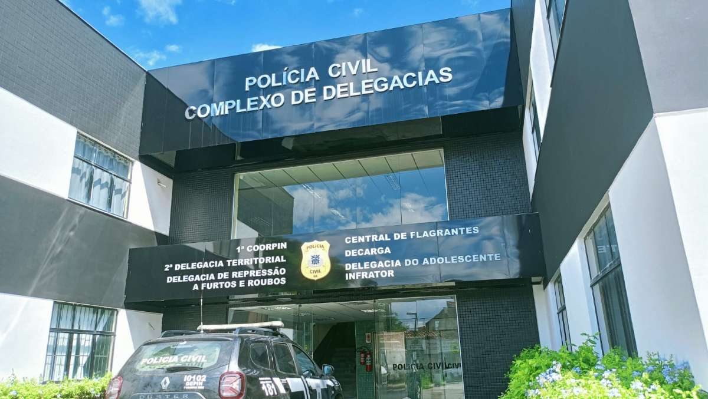

Repórter Davi
Notícias de Feira de Santana e Região
Repórter Davi
Notícias de Feira de Santana e Região
A Polícia Civil alcançou ainda o índice de 43,3% de elucidação da autoria dos crimes registrados no período.
Publicado em 03/07/2026

Foto: Divulgação/ Polícia Civil
O município de Feira de Santana registrou 111 Crimes Violentos Letais Intencionais (CVLIs) no primeiro semestre de 2026, o menor número para o período nos últimos 19 anos. Até então, o menor índice havia sido registrado em 2007, quando foram contabilizados 110 casos.
Em comparação com o primeiro semestre de 2025, quando foram contabilizados 118 casos, houve redução de 5,93% no número de CVLIs. Além da redução nos indicadores, a Polícia Civil alcançou o índice de 43,3% de elucidação da autoria dos crimes registrados no período.
Na área de abrangência da 1ª Coordenadoria Regional de Polícia do Interior (Coorpin/Feira de Santana), que compreende os municípios de Feira de Santana, Anguera, Antônio Cardoso, Ipecaetá, Rafael Jambeiro, Santo Estevão, São Gonçalo dos Campos, Serra Preta e Tanquinho, o índice de elucidação supera 45%. No mesmo período, a região registrou redução superior a 2% nos Crimes Violentos Letais Intencionais (CVLIs), passando de 139 casos no primeiro semestre de 2025 para 136 no mesmo período de 2026.
“Os resultados refletem o trabalho contínuo das equipes da Polícia Civil, com fortalecimento da investigação criminal, integração entre as forças de segurança. Seguiremos atuando para ampliar os índices de elucidação e reduzir ainda mais os crimes contra a vida na região”, afirmou o coordenador regional, delegado Rafael Almeida.